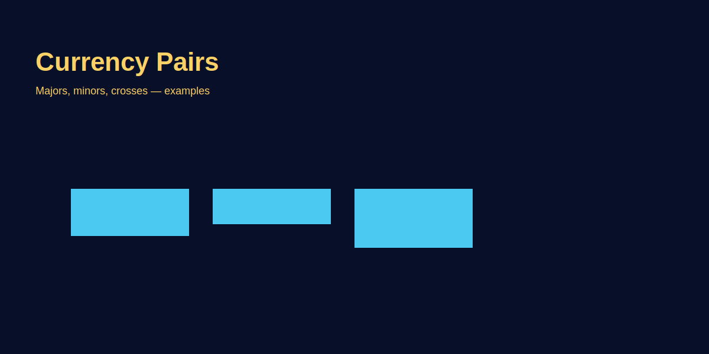

Currency Pairs Explained
Problem-based introduction
Types of Currency Pairs (With Examples)
- Majors: Include USD. Example: EUR/USD, GBP/USD, USD/JPY, USD/CHF. Tightest spreads, best liquidity.
- Minors/Crosses: USD nahi hota. Example: EUR/GBP, AUD/NZD, EUR/JPY. Spreads wider, liquidity lower than majors.
- Commodity pairs: AUD/USD, NZD/USD, USD/CAD — often linked to commodities (gold, dairy, oil). Example: AUD/USD can track gold sentiment.
- Exotics: USD/TRY, USD/ZAR. Very wide spreads; beginners should avoid.
Practical: Start with majors. After confidence, cautiously trade crosses with reduced size.
How to Read Price Quotes
Price quote 1.1200 on EUR/USD means 1 EUR = 1.1200 USD. Agar price 1.1250 hota hai, EUR strengthen ya USD weaken hua. GOLD (XAU/USD) price 1950.00 means 1 ounce gold = $1950.
- Bid vs Ask: Bid = aap sell kar sakte ho; Ask = aap buy kar sakte ho. Spread = Ask - Bid.
- Pip location: 4th decimal place for most pairs (EUR/USD 1.1200 → pip = 0.0001). JPY pairs 2nd decimal (USD/JPY 150.25 → pip = 0.01). GOLD often quoted to 2 decimals (0.01) or 3 decimals (0.001) depending on broker.
- Pipettes: Fractional pips (5th decimal EUR/USD, 3rd decimal JPY). Good for precise stops.
Pip Value & Position Sizing (Simple Math)
Pip value = pip size × lot size in base currency terms. Example EUR/USD micro lot (0.01): pip value ≈ $0.10. Standard lot (1.00) pip value ≈ $10. GOLD (0.01) pip value ≈ $0.10 per 0.01 movement if contract spec similar; check broker specs.
- Calculate risk: Risk = (stop distance in pips × pip value × lots).
- Example: Stop 30 pips, lot 0.05, pip value $0.10 → risk = 30 × 0.10 × 0.05 = $0.15. (If pip value $1, risk = $30). Always confirm contract spec.
- Rule: Risk 0.25%–0.5% per trade for intraday; 1% max swing.
Session Liquidity & Spreads
- Majors: Spreads tightest London/NY overlap. EUR/USD often 0.2–0.8 pips; GOLD 20–50 cents.
- Crosses: Wider spreads; Asia session mein aur bhi wide. Example: EUR/GBP 1–3 pips; EUR/NZD 4–10 pips.
- Exotics: 10–50 pips spread; avoid unless specific strategy.
Action: Trade when spreads normal; avoid low-liquidity windows for crosses/exotics.
Correlation Basics
- USD Index (DXY): USD strength indicator. If DXY up, majors against USD usually down (EUR/USD, GBP/USD), while USD/JPY up.
- GOLD vs USD: Often inverse; USD strong → GOLD weak (not always, but common). Track yields too.
- Commodity pairs: AUD often tracks gold; CAD tracks oil. News in commodities can move these pairs.
Tip: Avoid over-leveraging correlated pairs simultaneously (e.g., EUR/USD and GBP/USD both long = double USD risk).
Choosing Pairs as a Beginner
- Start with EUR/USD, GBP/USD, USD/JPY (tight spreads).
- Practice GOLD (XAU/USD) on demo first; volatility higher.
- Avoid exotics until 6-12 months experience.
Why: Tight spreads + deep liquidity reduce slippage and errors.
Mini Glossary (Ultra-Short)
- Base currency: First currency in pair.
- Quote currency: Second currency; tells how much needed for 1 base.
- Spread: Bid-Ask difference; your immediate cost.
- Lot: Trade size unit (standard/mini/micro).
Beginner Roadmap (8 Weeks)
- Weeks 1-2: Learn terms: base/quote, pip, spread, lot. 0 trades live.
- Weeks 3-4: Demo trade 10-15 trades on EUR/USD only. Journal: spread, slippage, emotion.
- Weeks 5-6: Add one more pair (GBP/USD or USD/JPY). Keep risk 0.25% on demo-equivalent sizing.
- Weeks 7-8: If consistent, move to micro live 0.01 lots. 15 trades; same journal metrics.
Rule: Add new pair only when prior pair results stable for 20+ trades.
Quick Reference Table (Majors vs Crosses)
| Pair Type | Example | Typical Spread (liquid hours) | Volatility |
|---|---|---|---|
| Major | EUR/USD | 0.2–0.8 pips | Moderate |
| Major | GBP/USD | 0.4–1.2 pips | High |
| Cross | EUR/GBP | 1–3 pips | Low-Mid |
| Cross | EUR/NZD | 4–10 pips | High |
| Exotic | USD/TRY | 10–50 pips | Very High |
Use: Spread × pip value × lot size = entry cost. High spread pairs → reduce size or avoid.
Case Study: Misreading Base/Quote
Trader thinks USD/JPY 150.00 means 1 JPY = 150 USD (galat). Actually 1 USD = 150 JPY. He sizes position 1 lot, expecting small risk. Pip value ~$9; stop 50 pips → $450 loss instead of planned $50. Lesson: base/quote samjho pehle, phir size karo.
Execution Checklist Per Trade
- Pair type? (Major/Cross/Exotic). If cross/exotic → size down.
- Spread normal? (Compare to average; if 2-3x, skip).
- Pip value confirmed from broker specs? (Especially gold/JPY).
- Stop distance set with buffer? Risk ≤ 0.5%?
- News on either currency within 30 mins?
- Correlation exposure? Already long USD somewhere else?
Practice Drills
- Write 10 example quotes; identify base/quote; convert direction in plain English.
- Calculate pip value for EUR/USD, USD/JPY, and XAU/USD for your broker contract sizes.
- Replay 20 trades on majors vs crosses and note spread differences in journal.
- Simulate 5 correlated trades (EUR/USD + GBP/USD long) and see P&L impact vs single trade.
Swap & Overnight Costs (Don’t Ignore)
Overnight hold karte waqt swap (financing) lagta hai. Positive bhi ho sakta hai (carry trade) ya negative. GOLD and most FX pairs par brokers daily swap apply karte hain; Wednesday triple swap hota hai (weekend adjustment).
- Example: 0.1 lot EUR/USD short, negative swap -$0.70/day. 5 days = -$3.5. Agar target 20 pips ($20) tha, net $16.5. Small but matters scalpers ke liye.
- GOLD swing: 0.1 lot, swap -$2 to -$5/day typical. 4 days hold = -$8 to -$20. Always include in R:R.
Action: Broker swap table check karo. Swing trades plan karte waqt swap budget add karo.
India Timezone Pair Selection
- Evening (6:30–11:00 pm IST): Best for majors (EUR/USD, GBP/USD) and GOLD during London–NY overlap.
- Afternoon (1–5 pm IST): London early hours; majors workable; avoid thin exotics.
- Morning (7–11 am IST): Asia-only liquidity; tighter for JPY pairs but still slower; reduce size.
Tip: Choose 2 pairs max per session; focus improves execution.
Advanced: Hedging & Correlation Awareness
Hedging matlab one pair long, correlated pair short to reduce exposure. Example: Long EUR/USD + short GBP/USD reduces pure USD exposure, but introduces EUR vs GBP basis risk. Beginners ke liye avoid unless math samjha ho.
- Good practice: Instead of hedging, reduce size on correlated positions.
- Correlation traps: EUR/USD and GOLD dono long = heavy USD short risk. One news event (FOMC) both hit.
Pre-Trade Mini Routine
- Pair name read karo, base/quote confirm.
- Spread check: compare to normal.
- News calendar: currencies involved?
- Pip value + stop distance = risk (must ≤ 0.5%).
- Correlation check: already same bias on similar pair?
- Screenshot levels; after exit, paste in journal.
One-Pair Mastery First
Shuruat mein sirf ek pair (EUR/USD ya GBP/USD) master karo. Uska session behavior, average spread, daily range, news impact sab yaad ho jayega. Edge stable ho to second pair add karo. Multi-pair juggling early stage mein unnecessary mistakes create karta hai.
Mantra: Ek pair, ek strategy, 100 trades. Fir next pair.
Result: Familiarity reduces errors, improves sizing accuracy, aur emotional stability bhi better hoti hai.
Bonus: Same pair par spreads aur swap behavior yaad ho jata hai, surprise costs avoid kar sakte ho.
Mini FAQ (Expanded)
- Majors vs crosses main difference?
- Majors tighter spreads, more liquidity; crosses wider spreads and sometimes choppy moves.
- GOLD pip value kaise count kare?
- Check broker contract spec. Commonly 0.01 move per 0.01 lot ≈ $0.10, but verify.
- JPY pairs stop-loss kahan set kare?
- Remember pip second decimal pe hota hai. Stops often need larger pip distance because volatility higher.
Common Mistakes
- Misreading base/quote and miscalculating position value.
- Trading illiquid crosses at large sizes without checking spreads.
- Overtrading correlated pairs (EUR/USD + GBP/USD same direction) leading to doubled USD risk.
- Ignoring pip location on JPY pairs (stops too tight, get hunted).
- Using same stop size across pairs without accounting for volatility.
Step-by-step explanation
- Use majors for tighter spreads when starting out.
- Watch correlated instruments — GOLD and USD pairs often interact.
- Size positions by volatility: GBP/JPY > EUR/USD volatility, so reduce size.
- Track news by currency: If USD has FOMC, avoid unrelated crosses that still have USD risk.
Real trading logic (GOLD example)
Example: XAU/USD at 1950 — if USD weakens, XAU/USD often rises. For a trader, understanding which currency drives the pair helps make better directional calls.
- Compare XAU/USD with USD index — inverse correlation sometimes appears.
- Check session liquidity before trading cross pairs; GOLD liquidity may be better around London/NY sessions.
Image-based examples (mandatory)
Image: annotated pair showing base/quote and an example price interpretation.
Common Mistakes
- Misreading base/quote and miscalculating position value.
- Trading illiquid crosses at large sizes without checking spreads.
Pro Tips
- Use majors for tighter spreads when starting out.
- Watch correlated instruments — GOLD and USD pairs often interact.
Risk Warning
Understand pair mechanics before trading live; incorrect assumptions cost money.
SEO FAQs
- 1. Currency pair kya hota hai?
- Base and quote currencies ka combination jisme price quoted hota hai.
- 2. Gold is a currency pair?
- XAU/USD is commodity quoted in USD; treat like a tradable pair.
- 3. Which pairs beginners should trade?
- Major pairs for tighter spreads; practice on demo first.